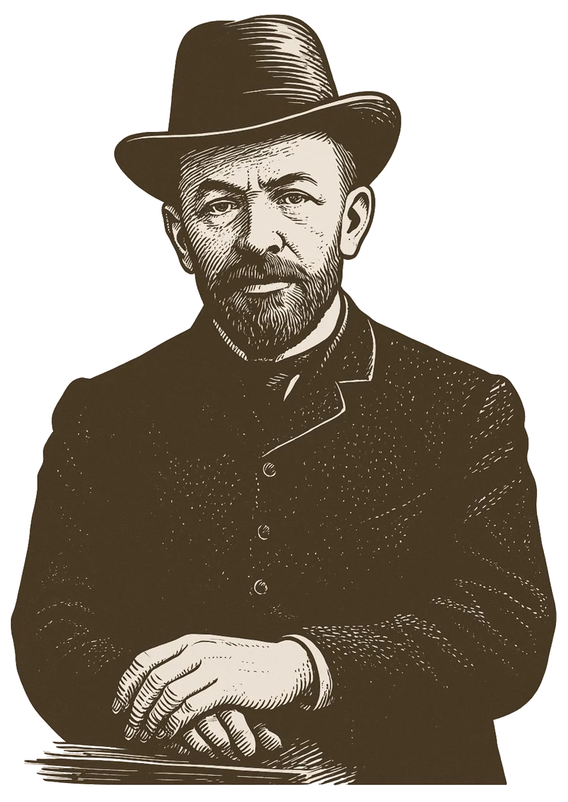
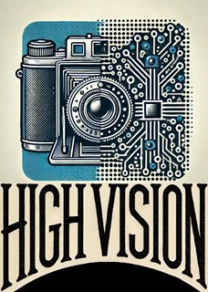
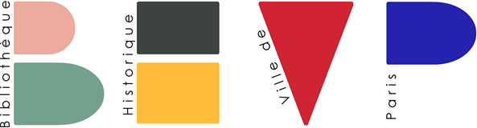

Heritage
Digitized photographic prints from Victor Forbin's personal archives, preserved by the Service historique de la Défense within their original archival organization.
Historical photographs · Document analysis · Digital humanities
More than 62,000 historical photographs from the archives of Victor Forbin, enriched with archival metadata, transcriptions, annotated stamps and automatic stamp detection.
Original archives held byService historique de la Défense
The collection
Victor Forbin began as a journalist in the 1880s, writing for Excelsior, the Journal des Voyages, the Revue des deux mondes and L’Illustration. In the early twentieth century he set up his own news picture agency: he bought prints in London, Berlin, Rome and New York and sold them to the main French newspapers. Its activity peaked in the 1910s and 1920s.
One collection, three perspectives
Digitized photographic prints from Victor Forbin's personal archives, preserved by the Service historique de la Défense within their original archival organization.
Searchable metadata, places, subjects, captions and press-agency stamps for history, the history of photography and digital humanities.
COCO polygons, OCR output and stamp detection predictions for historical document analysis and computer vision.
Research tasks
Photo agency and archive stamps are annotated on the verso of the prints, with model predictions for stamp detection and recognition.
Typed and handwritten captions, titles, dates and signatures are located and transcribed for text recognition on historical documents.
Each photograph pairs the image side with its annotated back, linking visual content with its archival and editorial history.
Paired images, texts and metadata support caption generation, image similarity search and metadata enrichment.
Visual similarity and archival metadata help trace how photographs were reused and republished.
Faded ink, stains and bleed-through offer a realistic test of robustness for recognition models.
Digital research desk
The explorer preserves each document's archival path, from its box to its recto or verso. Full-collection images are loaded on demand from Huma-Num Sharedocs using JSON manifests.
Documentation
SHDGR__GR_2_K_247_157_010__0001.jpg: box 157, photograph 010, 0001 recto, 0002 versoCitation
The collection combines images, archival metadata and annotations designed for reproducible research.
@article{Chelali2026_forbin,
author = {Chelali, Mohamed and Gosselet, Sylvain-Karl and Cloppet, Florence and Kurtz, Camille and Bloch, Isabelle and Foliard, Daniel},
doi = {10.5334/johd.487},
journal = {Journal of Open Humanities Data},
title = {The FORBIN Dataset: A Collection of Historical Photographs With Archival Metadata},
year = {2026}
}@misc{Chelali2025_forbin_dataset,
author = {Chelali, Mohamed and Gosselet, Sylvain-Karl and Cloppet, Florence and Kurtz, Camille and Bloch, Isabelle and Foliard, Daniel},
title = {Forbin Dataset},
year = {2025},
publisher = {Hugging Face},
doi = {10.57967/hf/7189},
url = {https://doi.org/10.57967/hf/7189}
}About
The Forbin Dataset is produced within the ANR HIGH VISION project (ANR-24-CE38-4079), which brings together historians and computer vision researchers to study the birth of an international visual culture through the archives of early news photo agencies: Forbin, Rol, Bain News and Black Star.
Dataset created by Mohamed Chelali, Sylvain-Karl Gosselet and Daniel Foliard (ECHELLES), Florence Cloppet and Camille Kurtz (LIPADE), and Isabelle Bloch (LIP6). With thanks to everyone who contributed to annotation and to identifying the circulation of photographs, in particular Sihem Yousfi and Marie-Louise Kitoko.
Archive holder
The original photographs of Victor Forbin are preserved by the Service historique de la Défense (SHD), under the reference GR 2 K 247. The SHD holds these archives; the images published here are digitized reproductions made available for research.
Visit the SHD website
Research consortium
The dataset is produced by the HIGH VISION consortium, which brings together computer science laboratories, historians and heritage institutions.
Visit the HIGH VISION website
Funded by the French National Research Agency under grant ANR-24-CE38-4079.